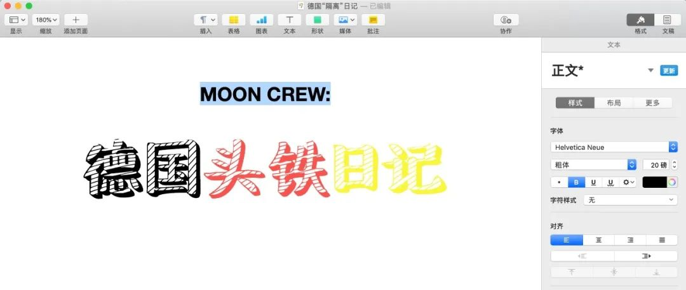

我在海外 | 加拿大蒙特利尔只有一家诊所能筛查新冠病毒
原文链接 备份链接 曾经被人羡慕着可以搭乘撤侨飞机回到安全地的加拿大人，怎么也不会想到，有一天，我们也要经历停课、所有公共场所强制关闭、抢购、缺货的生活。 文 | 艾琳 一个月前，谁都没有想到，我们这也会经历这样的乱世。 3月12日，我 …

今天是3月17日，月相为39%的下弦月。
It is March 17 with a 39 percent of Last Quarter.
距离新月还有 7 天。
There are 7 days until New Moon.
文 || 叶子风
Well we are all in the mood for a melody,
And you’ve got us all feeling alright.
这个周末因为要事从伦敦回了一趟慕尼黑。如果平时在街上，伦敦人还在坚持英格兰特色“口是心非抗疫法”——卫生纸抢起来打破头，口罩嘛打死也不戴——到了机场这种高危地带也都乖乖遮住了嘴巴。一个月前在机场戴口罩可能还会被骂，这次回德的飞机上大概有四分之一各国友人都套上了N95，也不知道骂得最欢的人是不是也偷偷囤得最多。出于习惯（懒惰）我一般都等到最后一个上飞机，成功观察到一个没戴口罩的欧洲友人上飞机前给自己的华为前后喷洒了三遍酒精。
我承认我是属于特别厌恶戴口罩的那批落后分子，这次坐飞机也终于屈服了。我总觉得效果好的口罩可以起到隔离效果——因为戴上实在憋人，不仅保护我不受病毒侵袭，也防止我戴着口罩乱跑感染别人。睡着之前，我看到乘务长在提醒旁边的人系好安全带，这人也戴着口罩，而且比我的N95还要大一圈。我觉得他不系安全带一定是因为有点膨胀——自己戴的口罩比旁边的中国人高级，意识到这一点心里大概轻松写意。疫情来袭改变了日常鄙视链，消费主义的价值观也在悄悄洗牌。

△ 慕尼黑街上人不多，可能天气太好都去公园晒太阳了。
飞机降落在空空荡荡的慕尼黑机场。德国其实暗地里也想让大多数人感染一遍，“苟”过这次疫情，只是默克尔没有鲍里斯嘴巴那么大而已。德国普通人的抗疫态度也处在焦虑和不屑纠缠不清的矛盾集合体中。字写得太抽象容易被打，举例子说话：检查我护照的海关小哥大约二十四岁上下，脸上有德国年轻人特有的自若神情，当然也不可能戴口罩，这是不屑。我走近时他逐渐做作的体态，只拉开两厘米的小窗口和仅用两根（戴了手套）手指磕碰着接过护照的动作是焦虑。
慕尼黑天气很好，居民纷纷带着小孩出门晒太阳。因为学校关门而无事可做的高中生也在街上流民似的闲逛。大家都没有戴口罩，我也没有。
△ 有时不得不感慨德国建筑水平普遍较高，普通的居民楼阳台在太阳下也有那么一点包豪斯的味道。
民族性是一个虚妄的概念。只是疫情到来，不得不让人感受到，不同国家的人民对待生死的态度有不可调和的矛盾。如果说我认为戴口罩是自己对他人负责的行为，德国人似乎并不在意这一层社会责任——并不是施人己所不欲，事实上他们也同样不在意自己是否会感染。可以说这是对注意防范的那一小撮人的不负责，然而德国人思想出奇的一致，某种意义上不难理解为什么黑格尔认为当时的普鲁士王国已经完成国家和个人诉求完全调和的理想社会。出门是因为我很喜欢的一个德国沐浴露牌子在网上买不到，走进超市的我也因此惊诧于矛盾的双重现实：门那边闲汉满街阳光明媚，门这边卫生纸厨房纸货架两空，唯一两瓶剩余的沐浴露被一个戴眼镜的猥琐中国人双双顺走。

△ 反正伦敦的货架已经是这样干净了。
回家洗手擦手机。明天要回伦敦了，我一直觉得期待“国家能救我”的想法在哪里都是幻觉。最恐慌的人和最不屑的人有没有疫情都要碰壁，人到最后只能靠自己。我包里还有坐飞机用的几只N95，一瓶免洗酒精洗手液，一袋消毒纸巾再加两只新买的沐浴露。说是人不能不怕死，也不能太怕死。

往期欧洲日记
3月15日 / 意大利：一个月后，我见到了第一个意大利人（郭容华）
叶子风往期文章
杂文 || 建筑失语症：建筑师是如何沦为工具人的？
小说 || ARCHITECTUAL FAIRY TALES：萤火虫（ft. 黄钟亮）
责任编辑、排版、封面图、首图：白清扬。

长按二维码向我转账
受苹果公司新规定影响，微信 iOS 版的赞赏功能被关闭，可通过二维码转账支持公众号。
原文链接 备份链接 曾经被人羡慕着可以搭乘撤侨飞机回到安全地的加拿大人，怎么也不会想到，有一天，我们也要经历停课、所有公共场所强制关闭、抢购、缺货的生活。 文 | 艾琳 一个月前，谁都没有想到，我们这也会经历这样的乱世。 3月12日，我 …
原文链接 备份链接 我不太确定学校停课的时间会不会继续延长。因为我们在群里对此次意大利疫情的预测是不太乐观的。 记 者 | 应 琛 受访者 | 王艺林 上午在宿舍自习完之后，我习惯性地打开新闻网站了解当天意大利新冠肺炎疫情的最新情况。我 …
原文链接 备份链接 编者按： 今天有两个新消息：好消息是，特朗普没感染，坏消息是，前一条消息并没有让美国人松一口气。相反，这两天美国的疫情紧张程度骤增，而这种紧张又通过各种社交媒体实时地传播到世界各地。 美国内部对于特朗普政府的疫情反应和 …
原文链接 备份链接 1月23日凌晨，除夕前夜，武汉宣布交通封城。如果没有这场疫情，丹丹现在已经到了河南，和事先从当阳赶来的姐姐在一起。 这是她计划已久的旅行。因为工作忙，假期少，按照惯例，丹丹过去几年都选择在春节期间出去旅游。 20号那 …
原文链接 备份链接 据最新数据，意大利确诊新冠病例数已超过7000，累计死亡366例，是除中国之外，全球疫情最严重的国家。 在意大利的华侨人数众多。武汉疫情起来时，他们积极捐款捐物，把当地能买到的口罩一扫而空。 意大利医疗系统对新冠 …